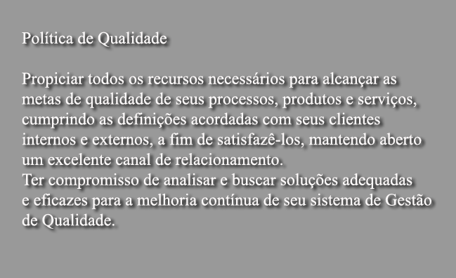
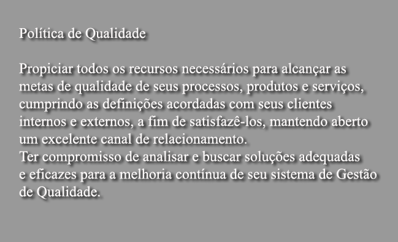
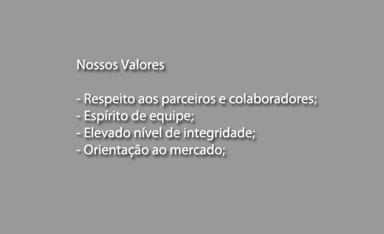
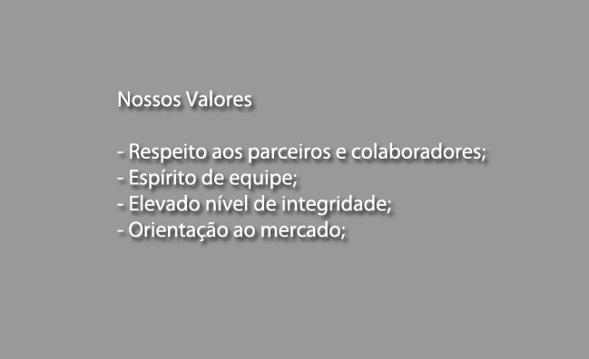

 


Parceiros

Soluttions
Uma empresa ágil e moderna, sempre em busca dos melhores processos de trabalho para garantir a qualidade de nossos produtos e serviços e a satisfação de nossos consumidores, gerando maior rentabilidade para nossos acionistas e melhores resultados para nossos negócios.

Teccenter
A Teccenter é uma empresa que desenvolve soluções inovadoras para seus clientes baseadas em tecnologia de informação, atuando profissionalmente de forma a garantir a qualidade e a pontualidade na entrega dos serviços contratados.
Serviços
- Desenvolvimento de Sistemas;
- Desenvolvimento de Web Sites;
- Assistência Técnica;
- Consultoria Especializada;
A TIS TECNOLOGIA LTDA objetiva sucesso naquilo que faz, e procura ultrapassar as expectativas do parceiro em relação ao produto em questão. Quem contrata a TIS TECNOLOGIA LTDA não contrata apenas uma empresa de desenvolvimento de software, mas uma parceira que irá colaborar das mais diversas formas para melhoria dos processos formalizados da sua empresa. Estaremos sempre sugerindo melhorias e adequações para aumentar a eficiência e a qualidade dos serviços, contudo, visando à redução de custos.


Conhecendo a TISSTECH
Tecnologia, Informação, Sistemas e Serviços.
1. A Empresa
A TISS foi criada em 2002, para atender a necessidade do mercado nacional na formação de um novo modelo de gestão com base em Tecnologia da Informação.
Este novo modelo deveria ser capaz de atuar de forma intensiva no mercado, com o objetivo de gerar mudanças rápidas e duradouras.
Com uma composição mesclada entre engenheiros, administradores e especialistas em TI, a equipe aglutinada na TISS começou a atuar de forma conjunta já em 1995, em projetos específicos dos sistemas públicos de transportes urbanos da região metropolitana do Recife - Pernambuco, Alagoas e Rio Grande do Norte.
O aumento da demanda pela equipe levou a formação de uma empresa, a TissTech. A equipe envolvida utilizou os conhecimentos multidisciplinares para desenvolver uma metodologia de trabalho voltada para a integração de tecnologias e soluções, a fim de sanar deficiências e suprir necessidades.
2. Organização
Como uma empresa de visão moderna, organizamos nossas atividades em uma estrutura que garante a qualidade e ao mesmo tempo procura evitar os excessos nos gastos. Cada projeto, serviço ou produto é aglutinado em um núcleo de negócios. Essa estrutura mista entre um modelo clássico e uma rede matricial, garante grande flexibilidade, agilidade e funcionalidade na gestão de nossas atividades junto aos clientes e parceiros.
3. Em Números
A equipe da TissTech e seus parceiros e colaboradores atua em todo o território nacional e no exterior.
Podemos destacar nas atividades desenvolvidas;
- Definição, Projeto, implantação e operação durante 10 anos do Sistema SABE – Sistema Automático de Bilhetamento Eletrônico para a RMR - Região Metropolitana de Recife no estado de Pernambuco/Brasil.
- O SABE é o sistema responsável por todo o cadastro dos usuários de transportes da Região Metropolitana do Recife, a qual engloba 18 municípios com uma população total de mais de 6.000.000 de habitantes. Conta com mais de 1.500.000 usuários cadastrados todos com cartões smart card com créditos a serem utilizados em mais de 3.000 POS´s (pontos de venda) embarcados em veículos e em pontos estratégicos da RMR - Região Metropolitana de Recife.
- O SABE conta com uma central de cadastro e controle que processa e revisa mais de 17.000 solicitações todo mês, e que no início cadastrou individualmente todos os usuários do projeto.
- Definição, Projeto, implantação e operação durante 10 anos do Sistema SBE – Sistema de Bilhetamento Eletrônico para a cidade de Maceió no estado de Alagoas/Brasil.
- O SBE é o sistema responsável por todo o cadastro dos usuários de transportes da cidade de Maceió com uma população total de mais de 1.000.000 de habitantes. Conta com mais de 600.000 usuários cadastrados todos com cartões smart card com créditos a serem utilizados em mais de 1.000 POS´s (pontos de venda) embarcados em veículos e em pontos estratégicos da cidade.
- O SBE conta com uma central de cadastro e controle que processa e revisa mais de 4.000 solicitações todo mês, e que no início cadastrou individualmente todos os usuários do projeto.
- Definição, Projeto, implantação e operação durante 6 anos do Sistema SBE – Sistema de Bilhetamento Eletrônico para a cidade de João Pessoa no estado da Paraíba/Brasil.
- O SBE é o sistema responsável por todo o cadastro dos usuários de transportes da cidade de João Pessoa com uma população total de mais de 1.000.000 de habitantes. Conta com mais de 500.000 usuários cadastrados todos com cartões smart card com créditos a serem utilizados em mais de 1.000 POS´s (pontos de venda) embarcados em veículos e em pontos estratégicos da cidade.
- O SBE conta com uma central de cadastro e controle que processa e revisa mais de 4.000 solicitações todo mês, e que no início cadastrou individualmente todos os usuários do projeto.
- Definição, Projeto, implantação e operação durante 10 anos do Sistema SBE – Sistema de Bilhetamento Eletrônico para a cidade de Teresina no estado de Piauí/Brasil.
- O SBE é o sistema responsável por todo o cadastro dos usuários de transportes da cidade de Teresina com uma população total de mais de 1.000.000 de habitantes. Conta com mais de 450.000 usuários cadastrados todos com cartões smart card com créditos a serem utilizados em mais de 1.000 POS´s (pontos de venda) embarcados em veículos e em pontos estratégicos da cidade.
- O SBE conta com uma central de cadastro e controle que processa e revisa mais de 4.000 solicitações todo mês, e que no início cadastrou individualmente todos os usuários do projeto.
Em uma década a TissTech foi responsável pelo cadastramento e gestão de mais de 3.000.000 de usuários, fazendo o cadastro, suporte e a administração de recursos e gestão de toda a base de dados financeira e cadastral, com uma rede de mais de 6.000 POS´s (pontos de venda).
- Somos os desenvolvedores e fornecedores da solução Otibus. Sistema inteligente para planejamento e acompanhamento da oferta de transpostes públicos, otimizando a melhor oferta ao menor custo possível. Este sistema é responsável pelo planejamento de transportes no estado de Pernambuco e na cidade de João Pessoa, além de ser utilizado por diversas empresas privadas do setor e para estudo de planejamento do governo de Angola. O sistema é responsável pelo planejamento de uma rede que atende a mais de 6.000.000 de usuários por dia.
- Somos os desenvolvedores e fornecedores da solução Olho Vivo. ERP leve e totalmente voltado para WEB com características de uma solução simples e voltada para a decisão.
- Somos os desenvolvedores e fornecedores da solução TAXPLAN. Sistema para cálculos de tarifas públicas e simulação de cenários baseado em dados históricos.
- Somos os desenvolvedores e fornecedores da solução ENERGI. Sistema que apura os resultados de empresas fornecedoras de energia e encaminha para os controladores governamentais, propiciando a observação da atenção às metas de serviço estabelecidas.
- Podemos ainda citar diversas experiências em áreas variadas:
- 1. "SETRANS/PE – Sindicato de Transportes de Passageiros do Estado de Pernambuco"
Serviço: Assessoria Técnica na área de Operação e Custos de Transportes
- 2. Empresa de Urbanização de Jaboatão
Serviço: Estudos de Transporte e Engenharia de Tráfego para Estruturação e Racionalização do Sistema de Transporte e Circulação no Município de Jaboatão, incluindo as seguintes atividades Estudo de Transporte e Tráfego com utilização de Modelos de Simulação; Estudos e Planos de Circulação para o Sistema Viário Urbano; Pesquisa de Origem/Destino, sobe-desce e de velocidade; Montagem de redes de tráfego; Estudos de Modelos Informatizados de Planejamento; Especificações de Sistema para Gerenciamento de Tráfego
- 3. INFRAERO/ROTINAS
Serviço: Serviços Técnicos profissionais especializados de consultoria técnica para elaboração do planejamento da fiscalização da execução e do comissionamento das obras especiais da rede de aeroportos da Infraero, compreendendo a elaboração de rotinas de fiscalização visando o gerenciamento da qualidade dos serviços de engenharia mediante procedimentos padronizados nas diversas especialidades e de procedimentos de comissionamento das obras especiais.
- 4. Departamento de Estradas de Rodagem do Governo do Estado de Rio Grande do Norte – DER/RN
Serviço: Consultoria Técnica e Administrativa de Apoio à Fiscalização do Sistema de Transporte Coletivo Rodoviário Intermunicipal de Passageiros do Estado do Rio Grande do Norte. Serviço realizado por 12 anos.
Concepção, implantação e controle do Cadastro Provisório do Transporte Opcional Médio Porte - CPTOMP
- 5. TRANSPAL - Associação de Empresa de Transportes de Passageiros do Estado de Alagoas
Serviço: Assessoria para operacionalização da câmara de compensação tarifária
Concepção, desenvolvimento e implantação dos sistemas autorizados pela gerência e fiscalização do Sistema de Transportes Coletivos de Passageiros; Concepção e desenvolvimento de Estudos organizacionais para estruturação da área de gerência de Sistema de Transporte. Implantação de Novas estruturas organizacionais e treinamento de equipes para gerência do Sistema de Transportes
Consultoria de Transportes para o município de Maceió-AL
- 6. Agencia Reguladora de Serviços Públicos do Estado de Alagoas – ARSAL
Serviço: Serviços Técnicos de Engenharia para Medição das Linhas de Ônibus do Sistema Intermunicipal de Passageiros de Alagoas.
Serviços Técnicos de Engenharia referentes à Medição e Levantamento das Linhas do Sistema de Transporte Rodoviário Intermunicipal de Passageiros do Estado de Alagoas.
- 7. Agência Estadual de Serviços Públicos de Mato Grosso do Sul – AGEPAN
Serviço: Serviços de Assessoria Especializada na Área de Transporte Rodoviário Intermunicipal de Passageiros para Execução do Projeto de Reestruturação do Sistema de Transporte Intermunicipal de Passageiros do Estado do Mato Grosso do Sul.
- 8. Empresa de Urbanização do Recife - URB/RECIFE
Serviço: Plano Diretor de Circulação do Recife - PDC/RECIFE, Considerando sua articulação com o Sistema viário Principal da Região Metropolitana do Recife.
- 9. Prefeitura Municipal de Petrolina
Serviço: Plano Diretor de Circulação do Município de Petrolina
Estudos e Projetos de Engenharia para o Sistema de Transportes Público de Passageiros – STPP, na área urbana do município de Petrolina-PE, visando a Modernização da Operação do Sistema de Transporte Público através da Implantação de um Sistema de Veículo Leve sobre Trilhos -VLT, em um corredor central segregado de Transporte; a racionalização e o ordenamento da Operação e da Circulação do Sistema de Transporte Coletivo; e a realização de Estudos Complementares visando melhorar a fluidez do tráfego no acesso ao centro urbano do Município
- 10. FESP/SP
Serviço: Serviços técnicos para o projeto de desenvolvimento institucional para munir as Subprefeituras de instrumentos de apoio para execução, Gerenciamento de Pavimento, montagem de banco de dados para coordenação e planejamento dos serviços de manutenção e limpeza urbana.
- 11. CONDER- Companhia de Desenvolvimento da Região Metropolitana de Salvador
Serviço: Política de Tarifação do Sistema de Transporte Metropolitano de ônibus na RMS; Manual de Implantação e Monitoração do Vale-Transporte no Sistema Metropolitano por ônibus da RMS; e Criaçao e implantação do Fundo Metropolitano de Transporte.
- 12. Construtora CELI
Serviço: Serviços técnicos especializados de consultoria para apoio ao gerenciamento e assessoria técnica na implantação do sistema adutor do Congo.
- 13. USINA CENTRAL OLHO D´ÁGUA
Serviço: Serviços técnicos de engenharia referente aos estudos de alternativas de traçado, estudos de viabilidade técnica, financeira, econômica e social, e o projeto executivo de engenharia para implantação e pavimentação da rodovia vicinal Condado-Ferreiros e da ligação Usina Matari/ Usina Olho d'água, incluindo o cadastramento de benfeitorias e pesquisas socioeconômicas.
- 14. DER-AL
Serviço: Programação de conservação, Manutenção e Restauração de Rede Pavimentada do estado com uma extensão de 1.454,98 KM
- 15. DER-RN
Serviço: Programação de conservação, Manutenção e Restauração de Rede Pavimentada do estado com uma extensão de 2.894,62 KM
- 16. Sindicato das Empresas de Transporte de Passageiros do Estado de Alagoas – SINTRAN
Serviço: Serviços Técnicos Especializados para Apoio à Gerência do Sistema de Transportes Intermunicipal de Passageiros do Estado de Alagoas – STIP/AL.
- 17. FETRONOR – Federação das Empresas de Transportes de Passageiros do Nordeste
Serviço: Serviços Técnicos Especializados de Consultoria e Assessoria Técnica abrangendo os Estados do Rio Grande do Norte, Paraíba, Pernambuco e Alagoas.
- 18. Superintendência Municipal de Transportes e Trânsito – SMTT
Serviço: Serviços Técnicos de Consultoria de Engenharia relativos a Pesquisas para Planejamento de Transportes, Plano Diretor de Transportes Urbanos e Serviços de Assessoria em Engenharia de Tráfego.
- 19. TACOM Engenharia e Projetos Ltda.
Serviço: Assessoria Técnica ao Programa de Catraca Eletrônica do STPP/Recife.
Consultorias e assessorias a diversas empresas privadas no trato de soluções para suas bases informacionais, com foco em fortalecimento do processo decisório e gestão da informação. Notadamente na construção de PDTIC – Planos Diretores de Tecnologia da Informação e Comunicação.
Contato
BrasilPaís:
PernambucoEstado:
RecifeCidade:
Fone: +55(81)3228-9247
Informações
Funcionamos de segunda a sexta das 08:00 às 18:00 horas, deixe seu recado ou entre em contato para mais informações.